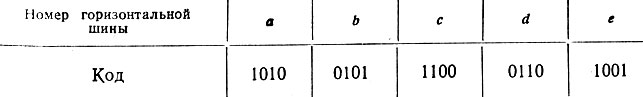

Матрицы: , ,
Ма́трица — обобщённый термин в электронике для обозначения различных объектов, в которых элементы объекта упорядочены в виде двумерного массива, аналогично математической матрице. В матрице изолированные друг от друга электрические проводники расположены (условно) вертикально и горизонтально, а в местах их пересечения расположены элементы матрицы (например, кнопки, светодиоды, ячейки памяти); элементы матрицы подключены к проводникам.
Здесь по строкам и столбцам расположены кнопки. Чтобы одновременное нажатие трёх кнопок не вызывало ложное срабатывание четвёртой, последовательно с каждой кнопкой подключают диод. Либо программно отключают третью (так работают компьютерные клавиатуры).
Фотоматрица — специализированная аналоговая или цифро-аналоговая интегральная микросхема, состоящая из светочувствительных элементов, организованная в виде матрицы
В матричных принтерах, в отличие от литероносителей, символы формируются матрицей, состоящих из отдельных печатаемых точек.
Программируемая вентильная матрица, состоящая из программируемых фабрично или пользователем электрических соединений.
В ОЗУ и ПЗУ элементы памяти на кристалле организованы в виде матрицы, обращение к которым обычно производится по строкам и столбцам.
Диод – это прибор, состоящий из двух электродов с односторонней проводимостью. Их используют в выпрямителях электрического тока, в различной радиоаппаратуре, блоках питания и прочих электрооборудовании.
Диодная матрица состоит из перекрещивающихся горизонтальных и вертикальных проводов, называемых шинами. По заданной программе вертикальные и горизонтальные шины в нужных точках пересечения соединим при помощи полупроводниковых диодов. Горизонтальные шины обычно являются входными, а вертикальные - выходными.
Соединение точек пересечения выполняется диодами для того, чтобы исключить появление ложных сигналов на выходе. Так, например, в матрице, в тех точках, где установлены диоды, соединим накоротко горизонтальные и вертикальные шины. Если на горизонтальную шину а подать положительное напряжение, то сигнал появится на всех вертикальных шинах. При наличии диодов напряжение появится (как это предусмотрено программой, заложенной в матрице) только на третьем и первом выходах.
Поскольку диодная матрица "помнит" правила (программу) преобразования сигналов, поданных на ее входы, то ее часто называют диодно-матричной памятью. В зависимости от схемы включения диодная матрица может выполнять различного рода сложные логические операции в системах автоматического управления. Рассмотрим наиболее часто встречающиеся случаи применения диодной матрицы.
Каждая выходная шина матрицы, схема которой показана на рис, выполняет логическую операцию "ИЛИ". Так, например, выходная шина 3 осуществляет логическую операцию: а или с или е.
Благодаря этому матрица позволяет осуществлять преобразование сигналов в двоичный код.
Рассмотрим это преобразование на примере матрицы, показанной на рис. Примем, что каждая вертикальная шина является определенным разрядом двоичного числа. Тогда при подаче положительного напряжения на горизонтальную шину а сигналы появятся на 1 и 3 вертикальных шинах. Следовательно, на выходе матрицы получится число 1010. Этим горизонтальной шине а присваивается число 1010, или, как говорят, шина а закодирована числом 1010. Аналогично происходит кодировка других входных шин. В результате получается следующий код сигналов, поданных на входы матрицы.

Рассмотрим пример использования матрицы, выполняющей сложную операцию "ИЛИ" в системе автоматического управления сигнализацией на железнодорожном вокзале.
Предположим, что задано следующее расписание движения поездов:
Схему автоматического управления сигнализацией осуществим следующим образом. На вход матрицы включим датчик времени, который в 12 час. 37 мин. подаст положительное напряжение на шину a, в 14 час. 05 мин. - на шину b и т. д. В соответствии со схемой диодная матрица (при подаче напряжения на одну из ее горизонтальных шин) выдаст кодированный двоичный сигнал. Дешифратор расшифрует этот сигнал и включит соответствующие световые указатели.
Рассмотрим, как для этого случая составляется матрица.
Направления поездов могут быть закодированы следующим образом:
Аналогично кодируются тип поезда и номер перрона, с которого он отправляется:
Поскольку информацию о направлении поезда, его типе и номере перрона необходимо иметь одновременно, то все три матрицы могут иметь общие горизонтальные шины.
Полученные матрицы показаны на рис. В 12 час. 37 мин. на горизонтальную шину a этой матрицы датчик времени включит положительное напряжение (подаст на шину единицу). Тогда на выходе первой матрицы (направление) появится сигнал 001, что означает "Рига-Москва". На выходе второй матрицы (тип поезда) будет сигнал 01, что соответствует сообщению "скорый поезд". И, наконец, на выходе третьей матрицы будет сообщено о перроне № 1 (01). Аналогично работают матрицы при подаче сигнала на другие горизонтальные шины.
Если меняется информация о поездах, то вносится соответствующее изменение в схемы матриц. Например, поезд "Рига-Москва" необходимо отправлять не с первого перрона, а со второго. В этом случае в матрице "номер перрона" необходимо выключить диод, соединяющий горизонтальную шину a с нулевой вертикальной шиной, и соединить диодом шину a с первой вертикальной.
В случае, когда в изменении схемы матрицы нет необходимости, диоды припаиваются к соответствующим шинам матрицы. Если же эта схема должна изменяться, то диоды соединяются с шинами при помощи винтов или защелок.
Для того чтобы использовать двоичные сигналы, получающиеся на выходе матрицы, их необходимо расшифровать. Схема простейшего дешифратора для сигнализации о номерах перронов, построенная на электромагнитных реле, показана на рис. 2.30. Матрица, в которой записана информация о номерах перронов, имеет две вертикальные выходные шины (в ней записаны двухразрядные числа). Поэтому дешифратор выполнен в виде двух электромагнитных реле. На катушку левого реле подается напряжение вертикальной шины матрицы, соответствующей первому разряду, а на катушку правого реле - напряжение шины, соответствующей нулевому разряду. Если на катушке напряжение отсутствует, то контакты находятся в верхнем положении (нуль). При подаче напряжения на катушку контакты реле переключаются в нижнее положение (единица).
Работает дешифратор следующим образом. Предположим, что на выходе матрицы "номер перрона" появился сигнал 10. Тогда левое реле включится, а правое - нет. Загорится лампочка "перрон № 2". Аналогичным образом работает дешифратор и при других сигналах матрицы.
Дешифраторы для матриц "направление" и "тип поезда" строятся по тому же принципу, что и дешифратор матрицы "номер перрона".
В некоторых случаях количество вертикальных шин матрицы может быть выбрано равным числу аппаратов, которые матрица должна включать. В этих случаях необходимость в дешифраторе отпадает и сигналы с вертикальных шин передаются непосредственно к управляемым аппаратам.
Рассмотрим пример такой матрицы: программное устройство для автоматического включения (и отключения) параллельно работающих трансформаторов.
Имеется трансформаторная подстанция, преобразующая напряжение 35 кв в напряжение 6 кв. На этой подстанции установлено три трансформатора мощностью 1, 3 и 5 ква. Задача состоит в том, что необходимо включать те или иные трансформаторы в зависимости от мощности, проходящей через подстанцию. Это позволит экономить электроэнергию за счет уменьшения потерь холостого хода в трансформаторах. Так, например, если через подстанцию проходит мощность 3 ква, то нужно включить трансформатор 3 ква, а остальные - выключить.
Создадим коммутатор, который в зависимости от мощности, проходящей через подстанцию, будет включать соответствующий контакт: если мощность равна 1 ква, то включается контакт 1, если W = 2 ква, - то контакт 2 и т. д. Поскольку наибольшая мощность, которая может проходить через подстанцию, равна 9 ква, то таких контактов будет девять.
Включим контакты этого коммутатора на девять горизонтальных шин. Вертикальные шины матрицы подадим к выключателям, включающим трансформаторы на сборные шины подстанции. Установим в матрице диоды так, чтобы мощность включаемых трансформаторов была равна мощности, проходящей через подстанцию. Так, например, на шестой шине мощность равна 6 ква. Поэтому эту шину соединим диодами с первой и третьей вертикальными шинами, что обеспечит включение двух трансформаторов мощностью 5 и 1 ква.
Полученная матрица осуществляет следующие сложные логические высказывания:
Если в рассмотренных выше матрицах поменять местами входы и выходы, то получатся матрицы, выполняющие сложную логическую операцию "И".
Принципиальная схема матрицы, предназначенной для выполнения сложной логической операции "И", показана на рис. Эта матрица в противоположность матрице, показанной на рис, преобразует двоичную информацию в сигнал управления тем или иным аппаратом. Поэтому она является дешифратором.
В цепи катушек переключателей 0, I, II и III, являющихся входами, подается четырехразрядная двоичная информация. Так, например, пусть необходимо включить аппарат А при наличии двоичного сигнала 1010. Подключим аппарат А к вертикальной шине, которую соединим диодами с горизонтальными шинами по схеме.
Напряжение на приборе А появится только в том случае, если III и I переключатели будут находиться в нижнем положении (в III и I разрядах числа имеются единицы), а II и 0 переключатели - в верхнем положении (во II и 0 разрядах - нули). В противном случае аппарат А будет зашунтирован одним из диодов и напряжение на нем будет равно нулю.
Аналогично обеспечивается включение аппарата В при подаче числа 1001.
Количество вертикальных шин матрицы определяется числом аппаратов, которые включаются матрицей. Поэтому матрица может иметь одну и более вертикальных шин. Количество горизонтальных шин равно двойному количеству разрядов закодированного двоичного числа.
Рассмотрим в качестве примера матрицу, выполняющую сложную операцию "И" и предназначенную для расшифровки двоичного сигнала "направление"
Как было показано выше, матрица рис. 2.29 осуществляет следующую кодировку:
Кодировка осуществляется трехзначными числами. Поэтому составляемая нами дешифрирующая матрица должна иметь три двойных входа. Поскольку имеется четыре различных световых указателя, то в матрице необходимо иметь четыре вертикальные шины. Схема матрицы, выполняющей необходимую расшифровку и управляющей световыми указателями